Meet the Creators
We are a dedicated students from the Polytechnic University of the Philippines (PUP), pursuing a Bachelor of Science in Computer Science (BSCS). Our team is passionate about leveraging technology to create innovative solutions that simplify everyday tasks. With diverse skills in web development, user experience design, and project management, we have come together to develop PUPMedical. Our goal is to streamline the process of managing medical forms, making it more efficient and accessible for everyone. We are proud to contribute to the future of digital healthcare solutions and look forward to making a positive impact in the community
